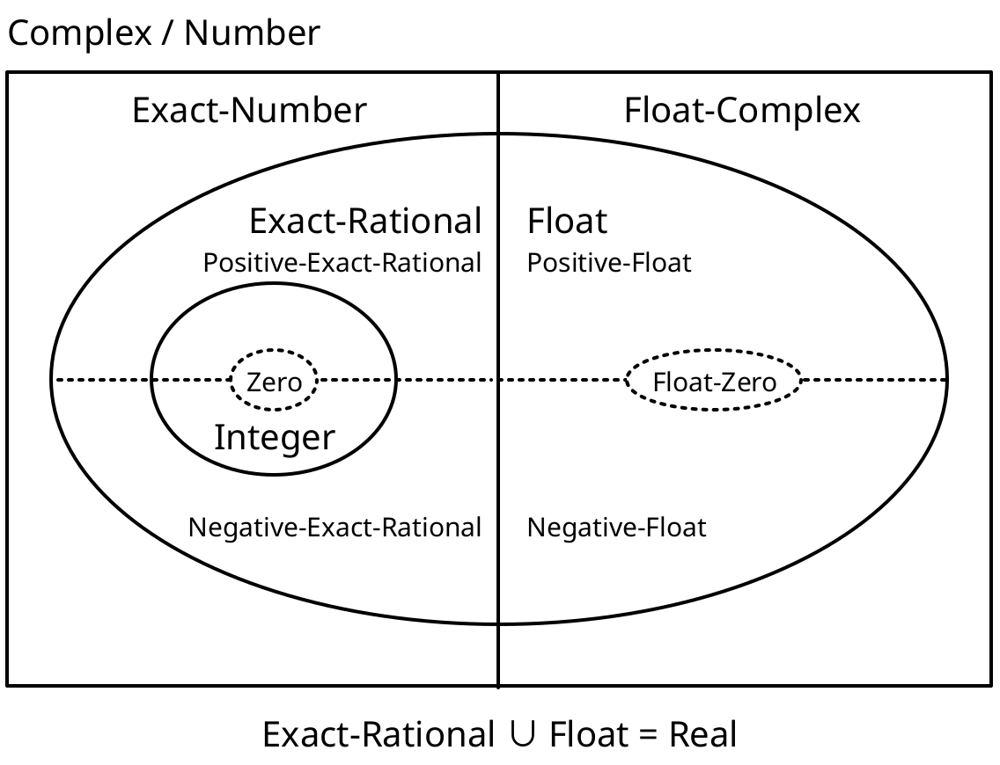
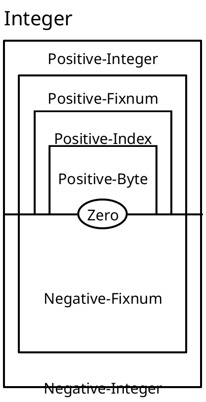

1 Type Reference
语法
语法
1.1 Base Types
1.1.1 Numeric Types
These types represent the hierarchy of numbers of Racket. The diagram below shows the relationships between the types in the hierarchy.

The regions with a solid border are layers of the numeric hierarchy corresponding to sets of numbers such as integers or rationals. Layers contained within another are subtypes of the layer containing them. For example, Exact-Rational is a subtype of Exact-Number.
The Real layer is also divided into positive and negative types (shown with a dotted line). The Integer layer is subdivided into several fixed-width integers types, detailed later in this section.
语法
语法
语法
语法
语法
语法
语法
语法
语法
语法
修改于package typed-racket-lib的1.7版本：Added Imaginary, Inexact-Complex, Exact-Complex, Exact-Imaginary, Inexact-Imaginary.
The above types can be subdivided into more precise types if you want to enforce tighter constraints. Typed Racket provides types for the positive, negative, non-negative and non-positive subsets of the above types (where applicable).
语法
语法
语法
语法
语法
语法
语法
语法
语法
语法
语法
语法
语法
语法
语法
语法
语法
语法
语法
语法
语法
语法
语法
语法
语法
语法
语法
语法
语法
语法
语法
语法
语法
语法
语法
语法
语法
语法
语法
语法
语法
语法
语法
语法
语法
语法
语法
语法
语法
These types are useful when enforcing that values have a specific sign. However, programs using them may require additional dynamic checks when the type-checker cannot guarantee that the sign constraints will be respected.
In addition to being divided by sign, integers are further subdivided into range-bounded types. The relationships between most of the range-bounded types are shown in this diagram:

Like the previous diagram, types nested inside of another in the diagram are subtypes of its containing types.
语法
语法
语法
语法
语法
语法
语法
语法
语法
语法
These types are useful to enforce bounds on numeric values, but given the limited amount of closure properties these types offer, dynamic checks may be needed to check the desired bounds at runtime.
> 7 - : Integer [more precisely: Positive-Byte]
7
> 8.3 - : Flonum [more precisely: Positive-Float-No-NaN]
8.3
> (/ 8 3) - : Exact-Rational [more precisely: Positive-Exact-Rational]
8/3
> 0 - : Integer [more precisely: Zero]
0
> -12 - : Integer [more precisely: Negative-Fixnum]
-12
> 3+4i - : Exact-Number
3+4i
语法
语法
语法
语法
语法
语法
语法
语法
语法
1.1.2 Other Base Types
语法
语法
语法
语法
语法
语法
语法
语法
语法
语法
语法
语法
语法
语法
语法
语法
语法
语法
语法
语法
语法
语法
语法
语法
语法
语法
语法
语法
语法
语法
语法
语法
语法
语法
语法
语法
语法
语法
语法
语法
语法
语法
语法
语法
语法
语法
语法
语法
语法
语法
语法
语法
语法
语法
语法
语法
> #t - : Boolean [more precisely: True]
#t
> #f - : False
#f
> "hello" - : String
"hello"
> (current-input-port) - : Input-Port
#<input-port:string>
> (current-output-port) - : Output-Port
#<output-port:string>
> (string->path "/") - : Path
#<path:/>
> #rx"a*b*" - : Regexp
#rx"a*b*"
> #px"a*b*" - : PRegexp
#px"a*b*"
> '#"bytes" - : Bytes
#"bytes"
> (current-namespace) - : Namespace
#<namespace>
> #\b - : Char
#\b
> (thread (lambda () (add1 7))) - : Thread
#<thread>
1.2 Singleton Types
Some kinds of data are given singleton types by default. In particular, booleans, symbols, and keywords have types which consist only of the particular boolean, symbol, or keyword. These types are subtypes of Boolean, Symbol and Keyword, respectively.
> #t - : Boolean [more precisely: True]
#t
> '#:foo - : '#:foo
'#:foo
> 'bar - : Symbol [more precisely: 'bar]
'bar
1.3 Containers
The following base types are parametric in their type arguments.
语法
(Pairof s t)
> (cons 1 2) - : (Pairof One Positive-Byte)
'(1 . 2)
> (cons 1 "one") - : (Pairof One String)
'(1 . "one")
语法
(Listof t)
语法
(List t ...)
语法
(List t ... trest ... bound)
语法
(List* t t1 ... s)
> (list 'a 'b 'c) - : (Listof (U 'a 'b 'c)) [more precisely: (List 'a 'b 'c)]
'(a b c)
> (plambda: (a ...) ([sym : Symbol] boxes : (Boxof a) ... a) (ann (cons sym boxes) (List Symbol (Boxof a) ... a)))
- : (All (a ...)
(-> Symbol (Boxof a) ... a (Pairof Symbol (List (Boxof a) ... a))))
#<procedure>
> (map symbol->string (list 'a 'b 'c)) - : (Listof String) [more precisely: (Pairof String (Listof String))]
'("a" "b" "c")
语法
(MListof t)
语法
(MPairof t u)
语法
语法
(Boxof t)
> (box "hello world") - : (Boxof String)
'#&"hello world"
语法
语法
(Vectorof t)
语法
添加于package typed-racket-lib的1.9版本。
语法
(Mutable-Vectorof t)
添加于package typed-racket-lib的1.9版本。
语法
(Vector t ...)
> (ann (vector 1 'A) (Vector Fixnum 'A)) - : (U (Immutable-Vector Fixnum 'A) (Mutable-Vector Fixnum 'A))
'#(1 A)
语法
(Immutable-Vector t ...)
> (vector-immutable 1 2 3)
- : (U (Immutable-Vector One Positive-Byte Positive-Byte)
(Mutable-Vector One Positive-Byte Positive-Byte)) [more precisely: (Immutable-Vector One Positive-Byte Positive-Byte)]
'#(1 2 3)
添加于package typed-racket-lib的1.9版本。
语法
(Mutable-Vector t ...)
> (vector 1 2 3)
- : (U (Immutable-Vector Integer Integer Integer)
(Mutable-Vector Integer Integer Integer)) [more precisely: (Mutable-Vector Integer Integer Integer)]
'#(1 2 3)
添加于package typed-racket-lib的1.9版本。
语法
> (flvector 1.0 2.0 3.0) - : FlVector
(flvector 1.0 2.0 3.0)
> (extflvector 1.0t0 2.0t0 3.0t0) - : ExtFlVector
#<extflvector>
语法
> (fxvector 1 2 3) - : FxVector
(fxvector 1 2 3)
语法
(HashTable k v)
> (make-hash '((a . 1) (b . 2)))
- : (U (Immutable-HashTable Symbol Integer)
(Mutable-HashTable Symbol Integer)
(Weak-HashTable Symbol Integer)) [more precisely: (Mutable-HashTable Symbol Integer)]
'#hash((a . 1) (b . 2))
语法
(Immutable-HashTable k v)
> #hash((a . 1) (b . 2))
- : (U (Immutable-HashTable Symbol Integer)
(Mutable-HashTable Symbol Integer)
(Weak-HashTable Symbol Integer)) [more precisely: (Immutable-HashTable Symbol Integer)]
'#hash((a . 1) (b . 2))
添加于package typed-racket-lib的1.8版本。
语法
(Mutable-HashTable k v)
> (make-hash '((a . 1) (b . 2)))
- : (U (Immutable-HashTable Symbol Integer)
(Mutable-HashTable Symbol Integer)
(Weak-HashTable Symbol Integer)) [more precisely: (Mutable-HashTable Symbol Integer)]
'#hash((a . 1) (b . 2))
添加于package typed-racket-lib的1.8版本。
语法
(Weak-HashTable k v)
> (make-weak-hash '((a . 1) (b . 2)))
- : (U (Immutable-HashTable Symbol Integer)
(Mutable-HashTable Symbol Integer)
(Weak-HashTable Symbol Integer)) [more precisely: (Weak-HashTable Symbol Integer)]
'#hash((b . 2) (a . 1))
添加于package typed-racket-lib的1.8版本。
语法
(Setof t)
> (set 0 1 2 3) - : (Setof Byte)
(set 1 3 0 2)
> (seteq 0 1 2 3) - : (Setof Byte)
(seteq 0 1 2 3)
语法
(Channelof t)
> (ann (make-channel) (Channelof Symbol)) - : (Channelof Symbol)
#<channel>
语法
(Async-Channelof t)
> (require typed/racket/async-channel) > (ann (make-async-channel) (Async-Channelof Symbol)) - : (Async-Channelof Symbol)
#<async-channel>
添加于package typed-racket-lib的1.1版本。
添加于package typed-racket-lib的1.1版本。
语法
(Parameterof t)
(Parameterof s t)
> current-input-port - : (Parameterof Input-Port)
#<procedure:current-input-port>
> current-directory - : (Parameterof Path-String Path)
#<procedure:current-directory>
语法
(Promise t)
> (delay 3) - : (Promise Positive-Byte)
#<promise:eval:52:0>
语法
(Futureof t)
语法
(Sequenceof t)
语法
(Custodian-Boxof t)
语法
(Thread-Cellof t)
语法
(Weak-Boxof t)
> (make-weak-box 5) - : (Weak-Boxof Integer)
#<weak-box>
> (weak-box-value (make-weak-box 5)) - : (U False Integer)
5
语法
(Ephemeronof t)
语法
(Evtof t)
> always-evt - : (Rec x (Evtof x))
#<always-evt>
> (system-idle-evt) - : (Evtof Void)
#<evt>
> (ann (thread (λ () (displayln "hello world"))) (Evtof Thread)) - : (Evtof Thread)
#<thread>
1.4 Syntax Objects
The following types represent syntax objects and their content.
语法
(Syntaxof t)
语法
语法
语法
(Sexpof t)
语法
语法
1.5 Control
The following types represent prompt tags and keys for continuation marks for use with delimited continuation functions and continuation mark functions.
语法
(Prompt-Tagof s t)
The domain of t determines the type of the values that can be aborted, using abort-current-continuation, to a prompt with this prompt tag.
> (make-continuation-prompt-tag 'prompt-tag) - : (Prompt-Tagof Any Any)
#<continuation-prompt-tag:prompt-tag>
语法
> (make-continuation-mark-key 'mark-key)
hello world
- : (Continuation-Mark-Keyof Any)
#<continuation-mark-key>
1.6 Other Type Constructors
语法
(-> dom ... rng opt-proposition)
(-> dom ... rest * rng) (-> dom ... rest ooo bound rng) (dom ... -> rng opt-proposition) (dom ... rest * -> rng) (dom ... rest ooo bound -> rng)
ooo = ... dom = type | mandatory-kw | opt-kw mandatory-kw = keyword type opt-kw = [keyword type] opt-proposition =
| : type |
: pos-proposition neg-proposition object pos-proposition =
| #:+ proposition ... neg-proposition =
| #:- proposition ... object =
| #:object index proposition = Top | Bot | type | (! type) | (type @ path-elem ... index) | (! type @ path-elem ... index) | (and proposition ...) | (or proposition ...) | (implies proposition ...) path-elem = car | cdr index = positive-integer | (positive-integer positive-integer) | identifier
The second form specifies a uniform rest argument of type rest, and the third form specifies a non-uniform rest argument of type rest with bound bound. The bound refers to the type variable that is in scope within the rest argument type.
> (λ ([x : Number] y : String *) (length y)) - : (-> Number String * Index)
#<procedure>
> ormap
- : (All (a c b ...)
(-> (-> a b ... b c) (Listof a) (Listof b) ... b (U False c)))
#<procedure:ormap>
In the third form, the ... introduced by ooo is literal, and bound must be an identifier denoting a type variable.
The doms can include both mandatory and optional keyword arguments. Mandatory keyword arguments are a pair of keyword and type, while optional arguments are surrounded by a pair of parentheses.
> (:print-type file->string) (-> Path-String [#:mode (U 'binary 'text)] String)
> (: is-zero? : (-> Number #:equality (-> Number Number Any) [#:zero Number] Any))
> (define (is-zero? n #:equality equality #:zero [zero 0]) (equality n zero)) > (is-zero? 2 #:equality =) - : Any
#f
> (is-zero? 2 #:equality eq? #:zero 2.0) - : Any
#f
When opt-proposition is provided, it specifies the proposition for the function type (for an introduction to propositions in Typed Racket, see Propositions and Predicates). For almost all use cases, only the simplest form of propositions, with a single type after a :, are necessary:
> string? - : (-> Any Boolean : String)
#<procedure:string?>
The proposition specifies that when (string? x) evaluates to a true value for a conditional branch, the variable x in that branch can be assumed to have type String. Likewise, if the expression evaluates to #f in a branch, the variable does not have type String.
In some cases, asymmetric type information is useful in the propositions. For example, the filter function’s first argument is specified with only a positive proposition:
> filter
- : (All (a b)
(case->
(-> (-> a Any : #:+ b) (Listof a) (Listof b))
(-> (-> a Any) (Listof a) (Listof a))))
#<procedure:filter>
The use of #:+ indicates that when the function applied to a variable evaluates to a true value, the given type can be assumed for the variable. However, the type-checker gains no information in branches in which the result is #f.
Conversely, #:- specifies that a function provides information for the false branch of a conditional.
The other proposition cases are rarely needed, but the grammar documents them for completeness. They correspond to logical operations on the propositions.
The type of functions can also be specified with an infix -> which comes immediately before the rng type. The fourth through sixth forms match the first three cases, but with the infix style of arrow.
语法
(->* (mandatory-dom ...) optional-doms rest rng)
mandatory-dom = type | keyword type optional-doms =
| (optional-dom ...) optional-dom = type | keyword type rest =
| #:rest type | #:rest-star (type ...)
> (: append-bar (->* (String) (Positive-Integer) String))
> (define (append-bar str [how-many 1]) (apply string-append str (make-list how-many "bar")))
If provided, the #:rest type specifies the type of elements in the rest argument list.
> (: +all (->* (Integer) #:rest Integer (Listof Integer)))
> (define (+all inc . rst) (map (λ ([x : Integer]) (+ x inc)) rst)) > (+all 20 1 2 3) - : (Listof Integer)
'(21 22 23)
A #:rest-star (type ...) specifies the rest list is a sequence of types which occurs 0 or more times (i.e. the Kleene closure of the sequence).
> (: print-name+ages (->* () #:rest-star (String Natural) Void))
> (define (print-name+ages . names+ages) (let loop ([names+ages : (Rec x (U Null (List* String Natural x))) names+ages]) (when (pair? names+ages) (printf "~a is ~a years old!\n" (first names+ages) (second names+ages)) (loop (cddr names+ages)))) (printf "done printing ~a ages" (/ (length names+ages) 2))) > (print-name+ages) done printing 0 ages
> (print-name+ages "Charlotte" 8 "Harrison" 5 "Sydney" 3)
Charlotte is 8 years old!
Harrison is 5 years old!
Sydney is 3 years old!
done printing 3 ages
Both the mandatory and optional argument lists may contain keywords paired with types.
The syntax for this type constructor matches the syntax of the ->* contract combinator, but with types instead of contracts.
For the types of functions with known arity and argument types, see the -> type constructor.
> (: my-list Procedure) > (define my-list list) > (my-list "zwiebelkuchen" "socca") eval:90:0: Type Checker: cannot apply a function with
unknown arity;
function `my-list' has type Procedure which cannot be
applied
in: "socca"
语法
(U t ...)
语法
(∩ t ...)
语法
(case-> fun-ty ...)
语法
(t t1 t2 ...)
语法
(Values t ...)
> (values 1 2 3) - : (values Integer Integer Integer) [more precisely: (Values One Positive-Byte Positive-Byte)]
1
2
3
语法
v
语法
(quote val)
语法
i
语法
(Rec n t)
语法
(Struct st)
语法
(Struct-Type st)
> struct:arity-at-least - : (StructType arity-at-least)
#<struct-type:arity-at-least>
> (struct-type-info struct:arity-at-least)
- : (values
Symbol
Integer
Integer
(-> arity-at-least Nonnegative-Integer Any)
(-> arity-at-least Nonnegative-Integer Nothing Void)
(Listof Nonnegative-Integer)
(U False Struct-TypeTop)
Boolean)
[more precisely: (values
Symbol
Nonnegative-Integer
Nonnegative-Integer
(-> arity-at-least Nonnegative-Integer Any)
(-> arity-at-least Nonnegative-Integer Nothing Void)
(Listof Nonnegative-Integer)
(U False Struct-TypeTop)
Boolean)]
'arity-at-least
1
0
#<procedure:arity-at-least-ref>
#<procedure:arity-at-least-set!>
'(0)
#f
#f
> (struct-info (arity-at-least 0)) - : (values (U False Struct-TypeTop) Boolean)
#<struct-type:arity-at-least>
#f
语法
(Prefab key type ...)
Prefabs are more-or-less tagged polymorphic tuples which can be directly serialized and whose fields can be accessed by anyone. Subtyping is covariant for immutable fields and invariant for mutable fields.
When a prefab struct is defined with struct the struct name is bound at the type-level to the Prefab type with the corresponding key and field types and the constructor expects types corresponding to those declared for each field. The defined predicate, however, only tests whether a value is a prefab structure with the same key and number of fields, but does not inspect the fields’ values.
> (struct person ([name : String]) #:prefab) > person - : (-> String person)
#<procedure:person>
> person? - : (-> Any Boolean : (Prefab person Any))
#<procedure:person?>
> person-name - : (All (x) (case-> (-> (Prefab person x) x) (-> (Prefab person Any) Any)))
#<procedure:person-name>
> (person "Jim") - : person
'#s(person "Jim")
> (ann '#s(person "Dwight") person) - : person
'#s(person "Dwight")
> (ann '#s(person "Pam") (Prefab person String)) - : person
'#s(person "Pam")
> (ann '#s(person "Michael") (Prefab person Any)) - : (Prefab person Any)
'#s(person "Michael")
> (person 'Toby) eval:111:0: Type Checker: type mismatch
expected: String
given: 'Toby
in: Toby
> (ann #s(person Toby) (Prefab person String)) eval:112:0: Type Checker: type mismatch
expected: person
given: (Prefab person 'Toby)
in: String
> (ann '#s(person Toby) (Prefab person Symbol)) - : (Prefab person Symbol)
'#s(person Toby)
> (person? '#s(person "Michael")) - : Boolean [more precisely: True]
#t
> (person? '#s(person Toby)) - : Boolean [more precisely: True]
#t
> (struct employee person ([schrute-bucks : Natural]) #:prefab) > (employee "Oscar" 10000) - : employee
'#s((employee person 1) "Oscar" 10000)
> (ann '#s((employee person 1) "Oscar" 10000) employee) - : employee
'#s((employee person 1) "Oscar" 10000)
> (ann '#s((employee person 1) "Oscar" 10000) (Prefab (employee person 1) String Natural)) - : employee
'#s((employee person 1) "Oscar" 10000)
> (person? '#s((employee person 1) "Oscar" 10000)) - : Boolean [more precisely: True]
#t
> (employee? '#s((employee person 1) "Oscar" 10000)) - : Boolean [more precisely: True]
#t
> (employee 'Toby -1) eval:122:0: Type Checker: type mismatch
expected: String
given: 'Toby
in: -1
> (ann '#s((employee person 1) Toby -1) (Prefab (employee person 1) Symbol Integer)) - : (Prefab (employee person 1) Symbol Integer)
'#s((employee person 1) Toby -1)
> (person? '#s((employee person 1) Toby -1)) - : Boolean [more precisely: True]
#t
> (employee? '#s((employee person 1) Toby -1)) - : Boolean [more precisely: True]
#t
语法
(PrefabTop key field-count)
For immutable prefabs this is equivalent to (Prefab key Any ...) with field-count many occurrences of Any. For mutable prefabs, this describes a prefab that can be read from but not written to (since we do not know at what type other code may have the fields typed at).
> (struct point ([x : Number] [y : Number]) #:prefab #:mutable) > point - : (-> Number Number point)
#<procedure:point>
> point-x
- : (All (a b)
(case->
(-> (Prefab (point #(0 1)) a b) a)
(-> (PrefabTop (point #(0 1)) 2) Any)))
#<procedure:point-x>
> point-y
- : (All (a b)
(case->
(-> (Prefab (point #(0 1)) a b) b)
(-> (PrefabTop (point #(0 1)) 2) Any)))
#<procedure:point-y>
> point? - : (-> Any Boolean : (PrefabTop (point #(0 1)) 2))
#<procedure:point?>
> (define (maybe-read-x p) (if (point? p) (ann (point-x p) Any) 'not-a-point))
> (define (read-some-x-num p) (if (point? p) (ann (point-x p) Number) -1)) eval:132:0: Type Checker: Polymorphic function `point-x'
could not be applied to arguments:
Types: (PrefabTop (point #(0 1)) 2) -> Any
Arguments: (PrefabTop (point #(0 1)) 2)
Expected result: Number
in: -1
添加于package typed-racket-lib的1.7版本。
语法
语法
语法
语法
1.7 Other Types
语法
(Option t)
语法
(Opaque t)